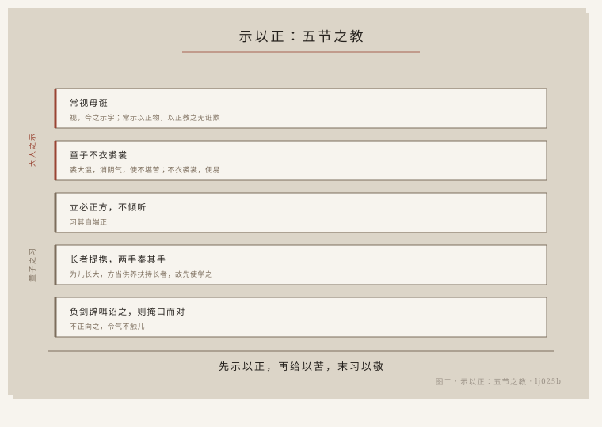

曲礼上 · 一·二十六 · 第 25 课
这一节讲怎么待小孩子：常给他看正的，不给看假的；不给他穿裘与裳；站要正，听不歪头；长者牵手要用两手捧；长者低头说话，要掩口再答。
说什么事：幼子常视毋诳；童子不衣裘裳；立必正方，不倾听；长者与之提携，则两手奉长者之手；负剑辟咡诏之，则掩口而对。
落在哪一层：教。上节讲自身衣服，这节讲教孩子——礼从最小的身量开始。
为何编在此位：礼之为教，先教大人怎样待孩子，再教孩子怎样待大人；此节两样都有。
【经】幼子常視毋誑。童子不衣裘裳。立必正方，不傾聽。長者與之提攜，則兩手奉長者之手。負劍辟咡詔之，則掩口而對。
视 郑注：「视，今之示字。小未有所知，常示以正物，以正教之无诳欺。」
裘裳 郑注：「裘大温，消阴气，使不堪苦。不衣裘裳，便易。」疏：「童子体热，不宜著裘……又应给役，若著裳则不便。」
立必正方 郑注：「习其自端正。」疏：「立宜正乡一方，不得倾头属听左右也。」
提携 疏：「提携谓牵将行时，因牵行之，又教之为节也。奉长者之手，为儿长大，方当供养扶持长者，故先使学之。」
负剑辟咡 郑注：「负谓致儿背上也，剑谓挟于胁下，如带剑也。辟，倾也。咡，口旁也，诏，告也。」
掩口而对 郑注：「不正向之，令气不触儿也。」疏：「掩口，恐气触人。」
幼小的孩子，要常拿正事示给他看，不用谎话哄他。童子不穿裘衣、不著裳。站必正对一方，不歪头侧听。长者牵他走，就用两手捧住长者的手。长者把小儿负在背上、挟剑于胁下，倾头在口旁告语，小儿就掩住口再答。
五句分两半：前三句教大人怎么待孩子（示以正、衣以便、立以正），后两句教孩子怎么待大人（奉手、掩口）。教的次序是先给样子，再要动作；样子对了，动作才不勉强。
第一层 教的起点是「示」，不是「告」 郑注把「视」解作「示」：小孩子还不懂事，你给他看什么，他就成什么。所以第一句不是「不许骗孩子」，是「不许拿假的东西给他看」。疏举曾子杀豕：妻哄儿说杀猪给你吃，曾子真杀了——「勿教儿欺」。
第二层 不衣裘裳，是使堪苦、便役 郑注两句：「裘大温，消阴气，使不堪苦」；「不衣裘裳，便易」。不是苦孩子，是不让他从小被暖软养坏了筋骨，也让他能跑能做事。疏补一句：二十才可以衣裘帛。
第三层 立正、不倾听，是习身体的正 注只四字「习其自端正」。礼从站相开始：站有定向，听不歪头，久了身体自带一个正。
第四层 奉手与掩口，是预演将来的奉养 疏说得直白：「为儿长大，方当供养扶持长者，故先使学之，令习便也。」今天两手捧长者的手，是将来的扶持；今天掩口答话，是将来的不犯。礼教孩子，教的是他二十年后要做的事。
与今日何干 今日教孩子多讲道理，少讲身体；多许愿，少兑现。此节反过来：先不欺，再给样子，再练动作。三样都不难，难在大人自己先做到。
| 左 | 右 |
|---|---|
| 幼子常视毋诳 | 视，今之示字；示以正物 |
| 童子不衣裘裳 | 裘大温，消阴气；裳则不便 |
| 立必正方 | 习其自端正 |
| 长者提携，两手奉其手 | 为长大供养扶持，先使学之 |
| 负剑辟咡诏之，则掩口而对 | 不正向之，令气不触儿 |
画一小儿与长者相对于院中：小儿并足正立，两手捧住长者伸来的一只手；长者略俯身，头侧向小儿口旁说话，小儿抬另一手掩口。只画背影与侧影，不画面容。不写文字。赭色只在长者衣袖与小儿鞋鼻。
